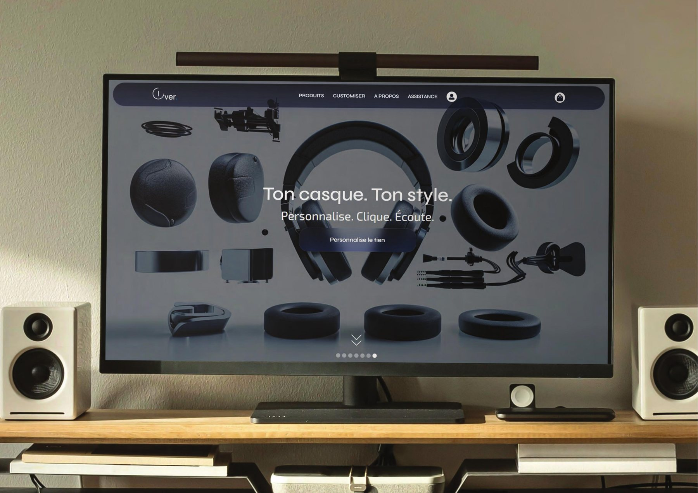
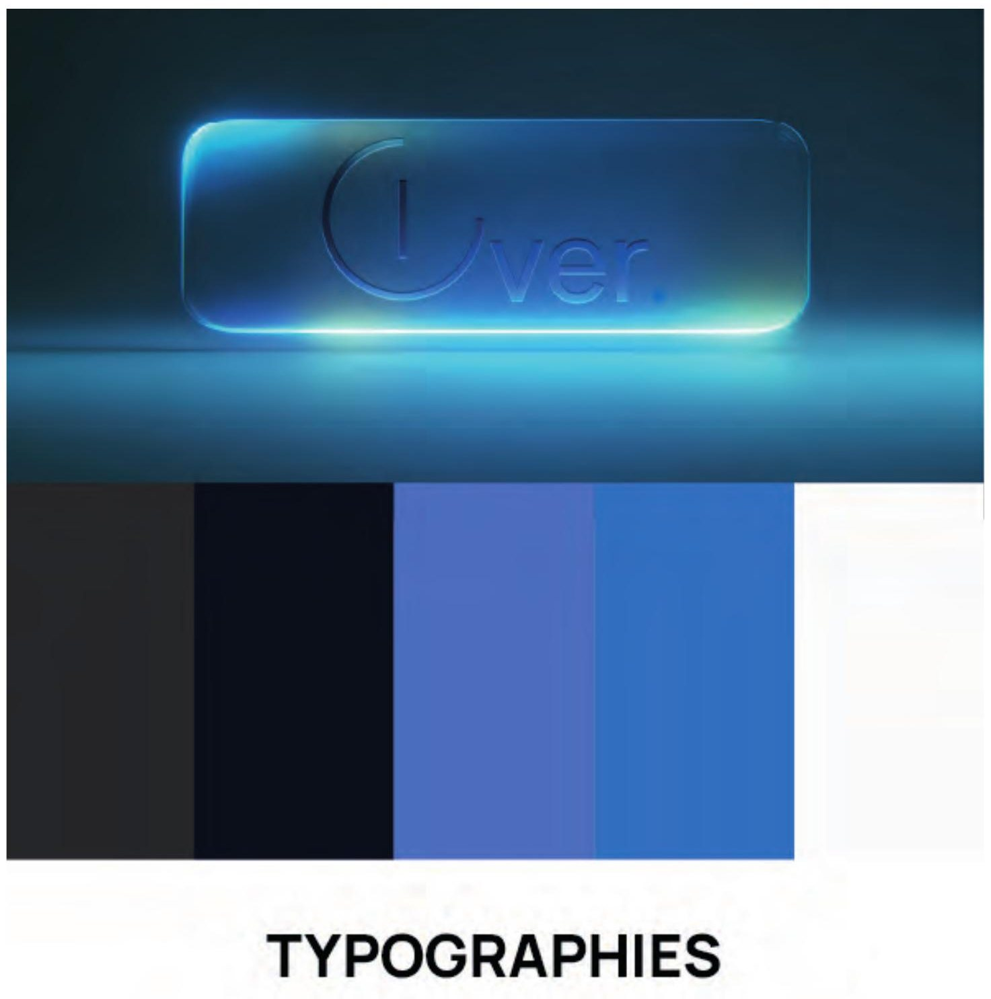
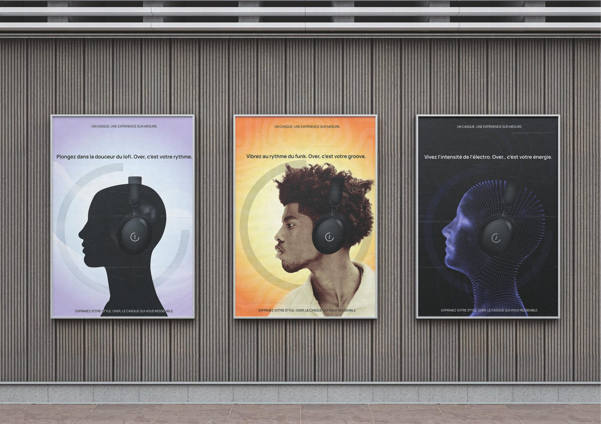
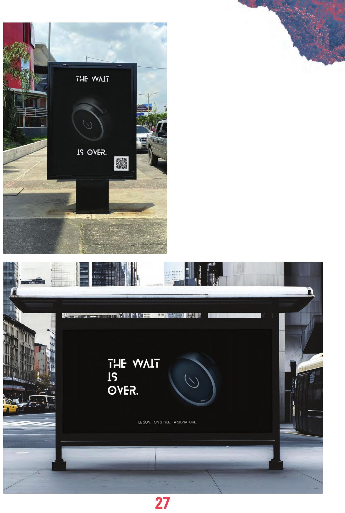
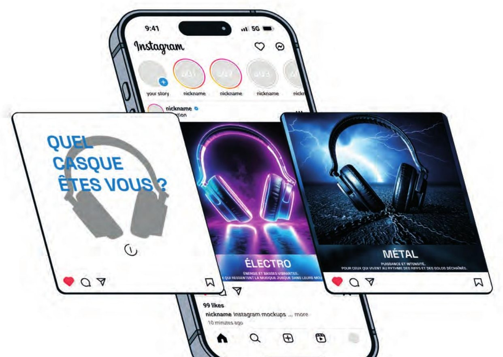
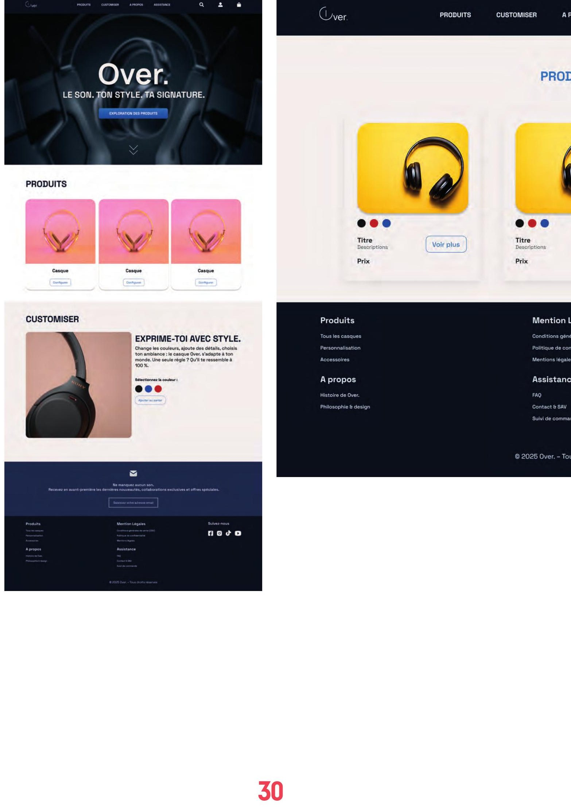
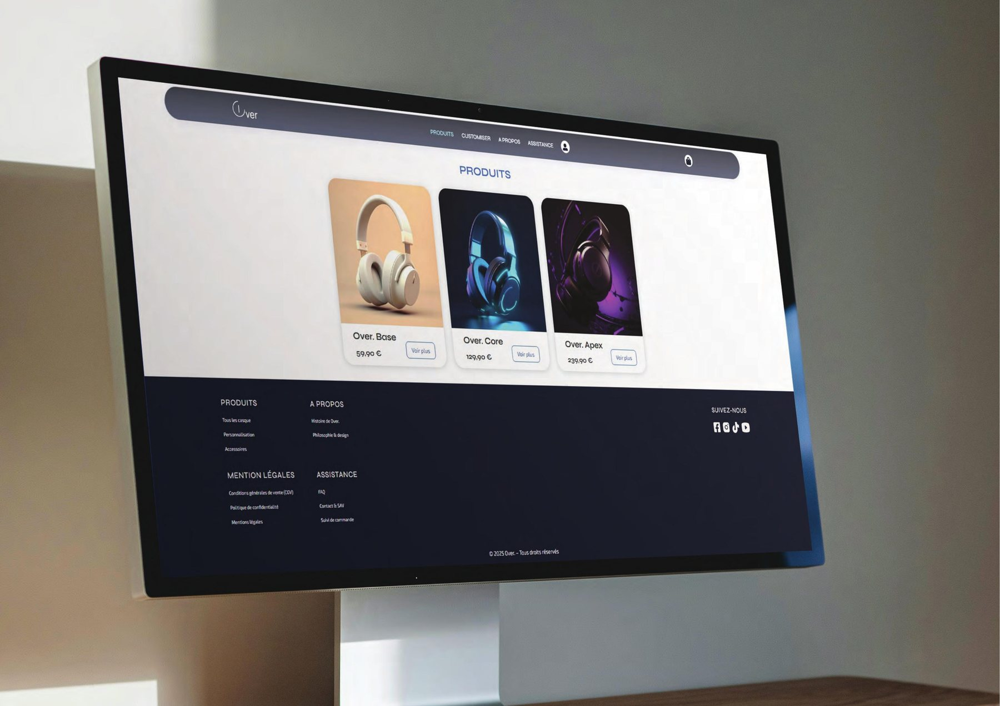

Over. — un casque, une expérience sur mesure.
Marque de casques audio alliant personnalisation et identité forte, imaginée pour un projet transversal réunissant communication visuelle, communication 360°, UI/UX et Webflow.

Une marque complète, de la stratégie au pixel.
Ce projet transversal regroupait les cours de communication visuelle, communication 360°, UI/UX et Webflow : il s'agissait de créer une marque complète et son univers. J'ai développé « Over », une marque de casques audio alliant personnalisation et identité forte — en concevant les maquettes, la stratégie de marque et l'interface utilisateur du site. Une synthèse de l'ensemble des compétences acquises pendant la formation.
Logo, palette & typographies
Un monogramme épuré et une palette bleu nuit pour incarner le son sur mesure.


Street marketing & teasing
« The Wait is Over » : affiche et mobilier urbain teasant l'arrivée de la marque via un QR code renvoyant vers un compte à rebours. Les stickers organisent une chasse au trésor — celui qui trouve le sticker doré remporte un casque Over.


Stratégie & retro-planning
Définition d'objectifs SMART, création de personas, benchmark concurrentiel et retro-planning pour organiser le déploiement de la communication — carrousel, post unique et réel pensés pour affirmer la présence de la marque sur les réseaux sociaux.
De la maquette au site interactif
Réalisation d'une maquette pour définir l'ergonomie et l'expérience utilisateur, avant de concrétiser le site avec Webflow — transposition des choix graphiques et fonctionnels dans un environnement web interactif et responsive.

